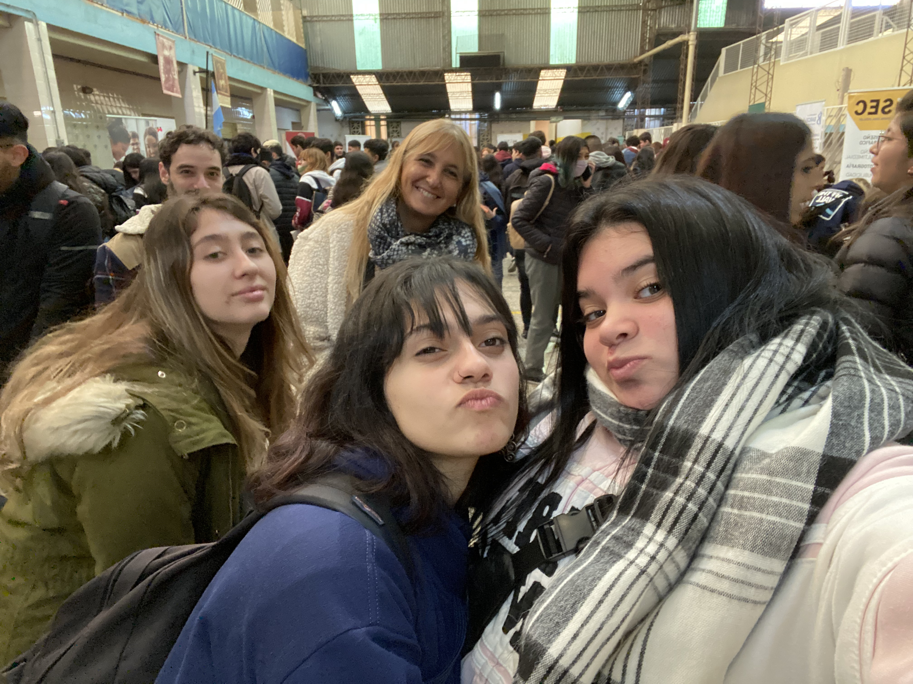
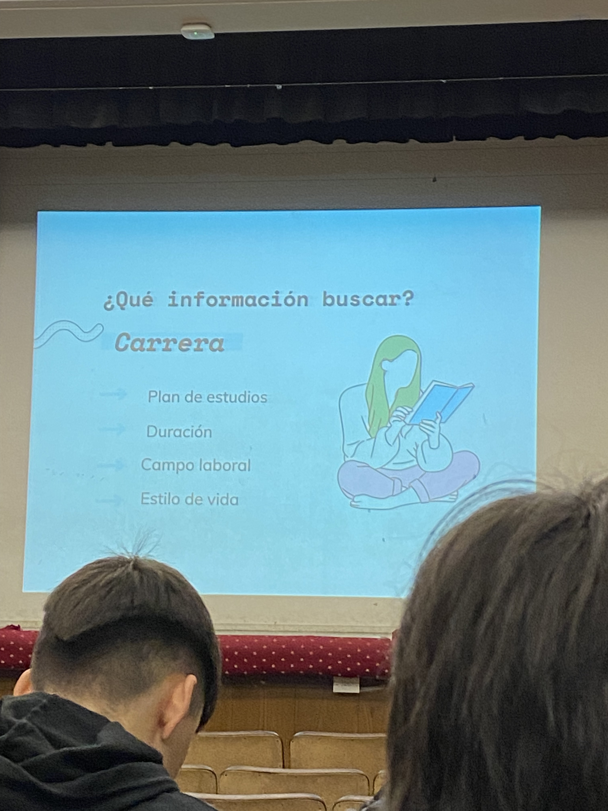

Expo Universitaria
Alumnos de 5to año visitaron una feria de universidades y pudieron conocer cómo puede llegar a una entrevista laborall
Por Sophia Herrera de 5°B
El 7 de junio, junto a los profesores Griselda Orellano, David Carullo, Lucia y Luciana (psicopedagogas), tuvimos otra oportunidad para informarnos sobre nuestras opciones a futuro, en un evento organizado
por los alumnos del último año del Instituto del Carmen, en Recoleta. Auditamos un Taller de Marketing personal donde
aprendimos a armar nuestros currículums y presentarnos en una entrevista laboral correctamente; y donde también escuchamos
una charla de orientación vocacional por parte de una psicóloga de la Universidad Católica Argentina, donde aprendimos
a planificarnos según nuestras vocaciones, pasiones y objetivos.
Seguido a eso visitamos la Expo Orientar Educativa, donde pudimos preguntar con libertad sobre sus ofertas académicas,
planes de estudio y aranceles a representantes de universidades como la Universidad de Ciencias Empresariales y Sociales,
Fundación ICBC, la Universidad de Morón y varias más. Finalmente, luego de poder visitar todos los stands y comprar en su
kiosco nos fuimos con la perspectiva ampliada y llenos de ganas de ir a por nuestro futuro.

